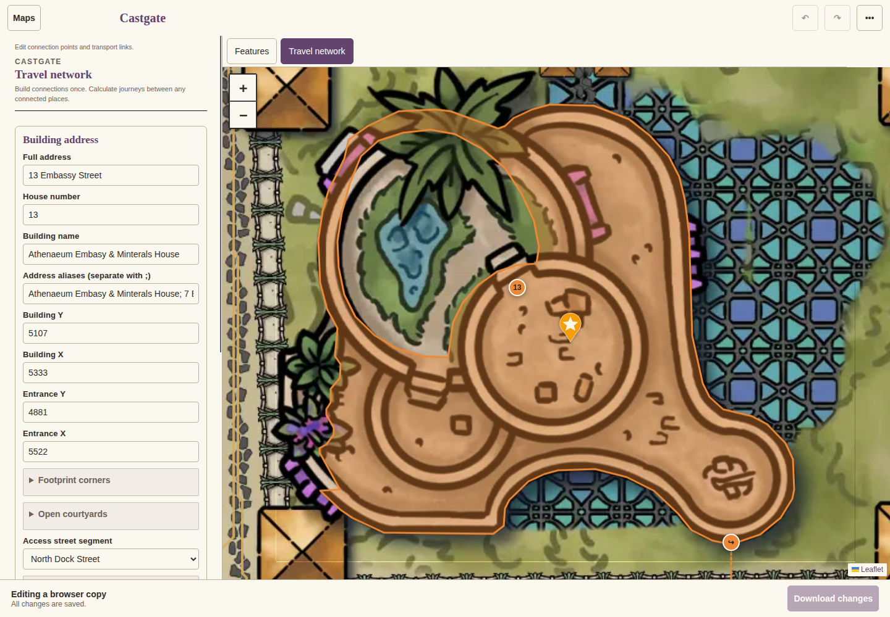
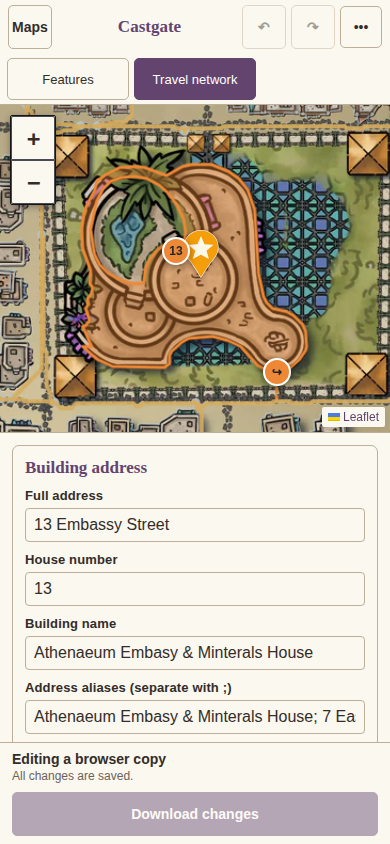
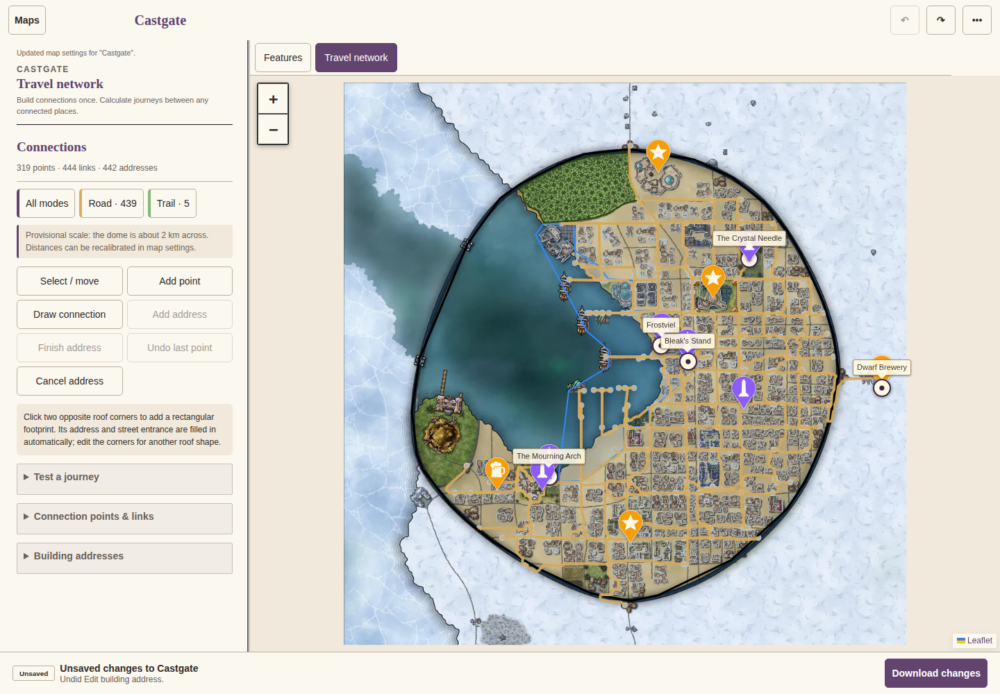
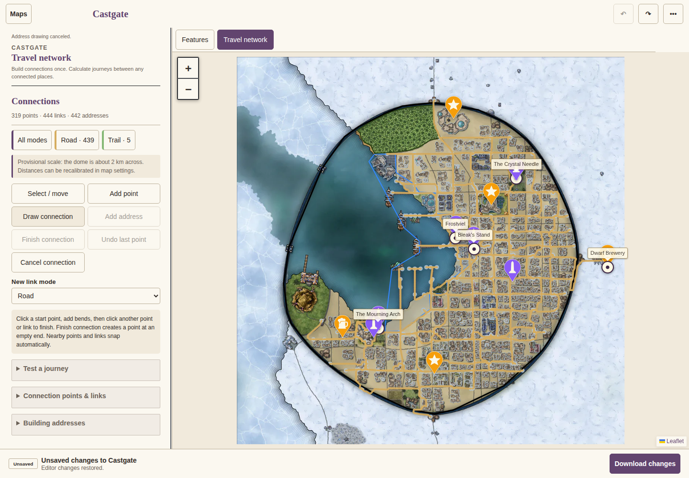
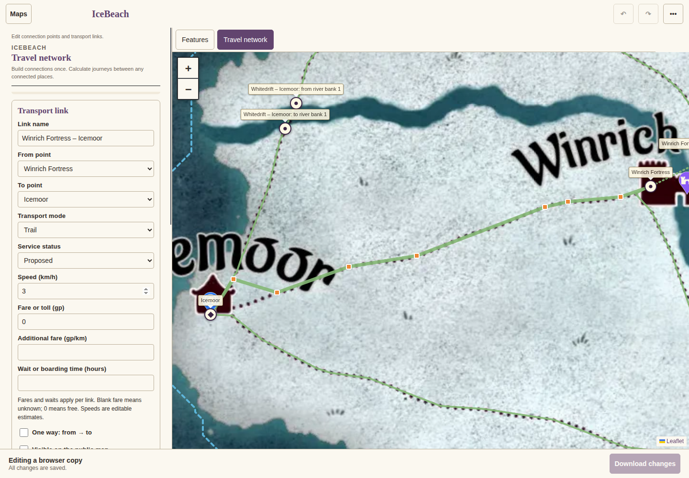
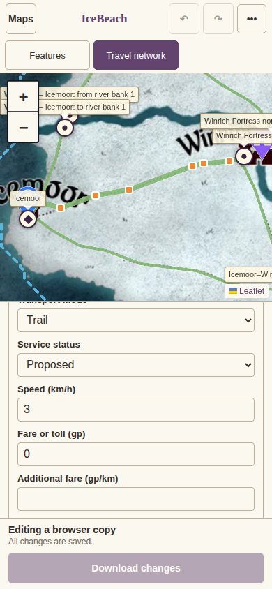

Buildings, streets and trails
These tools are experimental and require routing=1 in the URL. Choose a map, then open Travel network. These examples show the working web editor. Edits stay in your browser until you choose Download changes.
Identify a building and its entrance
Open Building addresses and search an address or place name. The selected outline follows the physical roof. Connected wings share one building; open courtyards stay outside it. Edit the address, aliases, roof corners, courtyard rings, entrance and street access in the inspector. Drag the entrance arrow to move its street approach.


Add a roof
Choose Add address, then click two opposite corners of the roof. This creates a rectangular starting outline and an available street number. Adjust Footprint corners to trace the actual roof and add any enclosed open courtyard. Check the entrance and its walking path against the artwork before downloading.

Add streets and transport connections
Choose Add point to place a junction, town, station or port. Choose Draw connection, select its travel mode, click a starting point, add bends along the depicted path, then finish at another point. Inserting a junction into a line creates a connected branch. Lines that cross each other stay separate until an explicit junction connects them.



Check and keep the data
Use Test a journey to confirm that the intended places connect. Keep unconfirmed water crossings Closed; an illustrated continuation across a river does not establish a bridge. Speeds and fares are editable estimates.
Download changes saves the edited map JSON. Buildings use buildings, connection points use travelNodes, and streets and transport paths use lines with references to their endpoint IDs. If atlas settings changed too, the download is a ZIP containing both files. Review the download before installing and publishing it through the repository.